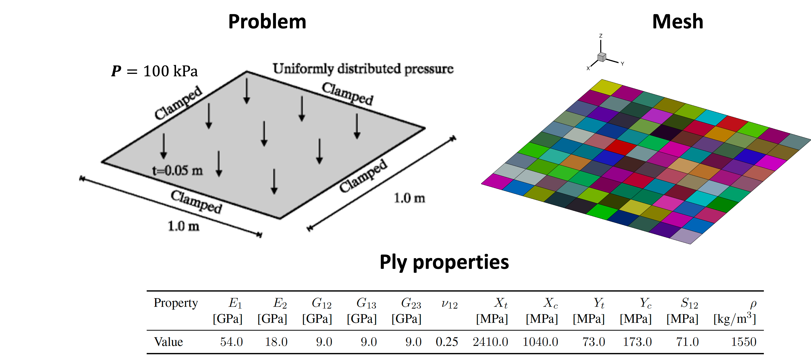

Composite plate optimization with MPhys¶
Note
The script for this example can be found under the examples/plate/ directory.
This example further demonstrates TACS structural optimization capabilities through MPhys. In this example a compliance minimization problem for a composite plate, based off of one originally proposed by Lund and Stegmann [1], is solved. A 1 m x 1 m x 0.05 m composite plate is clamped on all edges and subjected to a uniform pressure of 100 kPa loading on the top. The plate is discretized into 100 quad shell elements, each having its own independent laminate layup. The goal of this example will be to optimize the layup of each element in the plate in order to minimize the total compliance energy. A diagram of the problem is shown below.
{kind=link}
To make this problem tractable for gradient-based optimization we will make the following simplifications:
For each layup we can ony select plies of the following angles: \(0^\circ, 45^\circ, -45^\circ, 90^\circ\).
We will neglect the discrete nature of the plies and the effects of stacking sequence. Instead, we homogenize or "smear" each ply angle's contribution to laminate stiffness based on its proportion of plies in the layup or "ply fraction".
The optimization problem can now be summarized as follows:
{kind=link}
To begin we first import required libraries, define the model bdf file, and define important problem constants:
import os
import openmdao.api as om
import numpy as np
from mphys import Multipoint
from mphys.scenario_structural import ScenarioStructural
from tacs import elements, constitutive, functions
from tacs.mphys import TacsBuilder
# BDF file containing mesh
bdf_file = os.path.join(os.path.dirname(__file__), "partitioned_plate.bdf")
# Material properties
rho = 1550.0
E1 = 54e9
E2 = 18e9
nu12 = 0.25
G12 = 9e9
G13 = 9e9
Xt = 2410.0e6
Xc = 1040.0e6
Yt = 73.0e6
Yc = 173.0e6
S12 = 71.0e6
# Shell thickness
ply_thickness = 1.25e-3 # m
plate_thickness = 0.05 # m
tMin = 0.002 # m
tMax = 0.05 # m
# Ply angles/initial ply fractions
ply_angles = np.deg2rad([0.0, 45.0, -45.0, 90.0])
ply_fractions = np.array([0.25, 0.25, 0.25, 0.25])
# Pressure load to apply to plate
P = 100e3
Next, we define an element_callback function for setting up the TACS elements and design variables.
We use the SmearedCompositeShellConstitutive class here for the constitutive properties, and
assign four design variable numbers to each element (one for each ply fraction), and return a Quad4Shell element class.
# Callback function used to setup TACS element objects and DVs
def element_callback(dvNum, compID, compDescript, elemDescripts, specialDVs, **kwargs):
# Create ply object
ortho_prop = constitutive.MaterialProperties(
rho=rho,
E1=E1,
E2=E2,
nu12=nu12,
G12=G12,
G13=G13,
G23=G13,
Xt=Xt,
Xc=Xc,
Yt=Yt,
Yc=Yc,
S12=S12,
)
ortho_ply = constitutive.OrthotropicPly(ply_thickness, ortho_prop)
# Create the layup list (one for each angle)
ortho_layup = [ortho_ply, ortho_ply, ortho_ply, ortho_ply]
# Assign each ply fraction a unique DV
ply_fraction_dv_nums = np.array(
[dvNum, dvNum + 1, dvNum + 2, dvNum + 3], dtype=np.intc
)
# Create smeared stiffness object based on ply angles/fractions
con = constitutive.SmearedCompositeShellConstitutive(
ortho_layup,
plate_thickness,
ply_angles,
ply_fractions,
ply_fraction_dv_nums=ply_fraction_dv_nums,
)
# Define reference axis to define local 0 deg direction
refAxis = np.array([1.0, 0.0, 0.0])
transform = elements.ShellRefAxisTransform(refAxis)
# Pass back the appropriate tacs element object
elem = elements.Quad4Shell(transform, con)
return elem
We define a problem_setup to add fixed loads and eval functions.
Here we specify the plate compliance energy (Compliance) as an output for our analysis
and add our 100 kPa pressure load.
def problem_setup(scenario_name, fea_assembler, problem):
"""
Helper function to add fixed forces and eval functions
to structural problems used in tacs builder
"""
# Add TACS Functions
problem.addFunction("compliance", functions.Compliance)
# Add forces to static problem
allComponents = fea_assembler.selectCompIDs()
problem.addPressureToComponents(allComponents, P)
For our last helper function we define a constraint_setup function.
This function can be used to add additional relational constraints to the design variables we defined in the element_callback.
In particular, we want to enforce a new constraint (100 in total) such that the ply fractions within each element should sum to unity.
We can accomplish this by utilizing the DVConstraint class.
def constraint_setup(scenario_name, fea_assembler, constraint_list):
"""
Helper function to setup tacs constraint classes
"""
constr = fea_assembler.createDVConstraint("ply_fractions")
allComponents = fea_assembler.selectCompIDs()
constr.addConstraint(
"sum", allComponents, dvIndices=[0, 1, 2, 3], dvWeights=[1.0, 1.0, 1.0, 1.0]
)
constraint_list.append(constr)
Fianlly, we define our Multipoint class.
To do this, we instantiate the TacsBuilder using the element_callback, problem_setup, and constraint_setup we defined above.
We create OpenMDAO Component's to feed design variable and mesh inputs to the Scenario component.
We use this builder to create an MPhys StructuralScenario.
class PlateModel(Multipoint):
def setup(self):
struct_builder = TacsBuilder(
mesh_file=bdf_file,
element_callback=element_callback,
problem_setup=problem_setup,
constraint_setup=constraint_setup,
coupled=False,
check_partials=True,
)
struct_builder.initialize(self.comm)
dv_array = struct_builder.get_initial_dvs()
dvs = self.add_subsystem("dvs", om.IndepVarComp(), promotes=["*"])
dvs.add_output("dv_struct", dv_array)
self.add_subsystem("mesh", struct_builder.get_mesh_coordinate_subsystem())
self.mphys_add_scenario(
"pressure_load", ScenarioStructural(struct_builder=struct_builder)
)
self.mphys_connect_scenario_coordinate_source("mesh", "pressure_load", "struct")
self.connect("dv_struct", "pressure_load.dv_struct")
At this point we setup the OpenMDAO Problem class that we will use to perform our optimization.
We assign our PlateModel to the problem class and set ScipyOptimizeDriver.
We define our design variables, constraint, and objective.
Finally, we run the problem driver to optimize the problem.
prob = om.Problem()
prob.model = PlateModel()
model = prob.model
# Declare design variables, objective, and constraint
model.add_design_var("dv_struct", lower=0.0, upper=1.0)
model.add_objective("pressure_load.compliance")
model.add_constraint("pressure_load.ply_fractions.sum", equals=1.0, linear=True)
# Configure optimizer
prob.driver = om.ScipyOptimizeDriver(debug_print=["objs", "nl_cons"], maxiter=100)
prob.driver.options["optimizer"] = "SLSQP"
# Setup OpenMDAO problem
prob.setup()
# Output N2 representation of OpenMDAO model
om.n2(prob, show_browser=False, outfile="tacs_struct.html")
# Run optimization
prob.run_driver()
After the optimization completes the user should see a print out to screen like shown below.
>>> Optimization terminated successfully (Exit mode 0)
>>> Current function value: 8.571649588963465
>>> Iterations: 34
>>> Function evaluations: 34
>>> Gradient evaluations: 34
>>> Optimization Complete
>>> -----------------------------------
Once the optimization is complete we can post-process results.
The f5 solution file at each optimization iteration can also be converted to a Tecplot or Paraview files using f5totec or f5tovtk, respectively.
The optimized ply fraction distributions for each angle can be visualized by plotting the contours of the following variables in Tecplot or Paraview: dv2, dv3, dv4, dv5.
A visualization of the optimized result is shown below:
{kind=link}
References